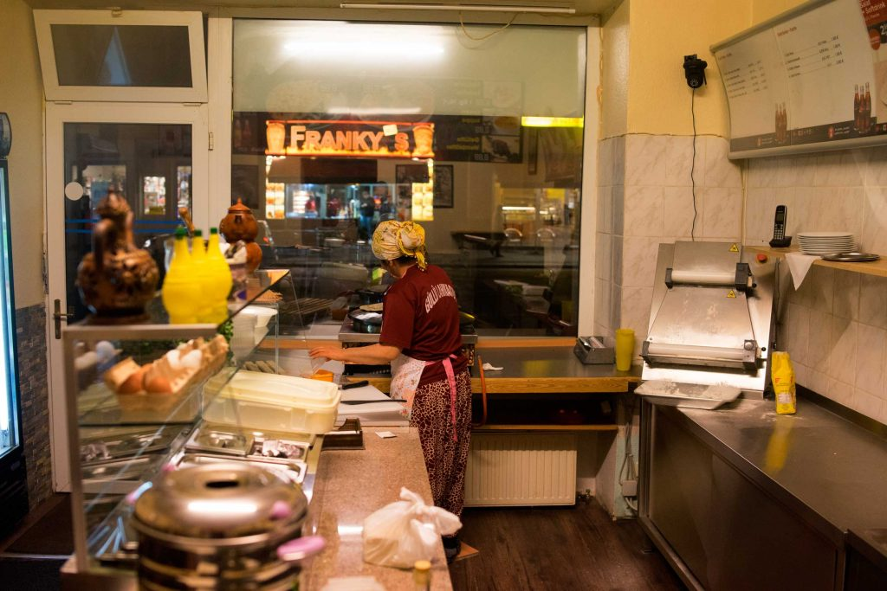
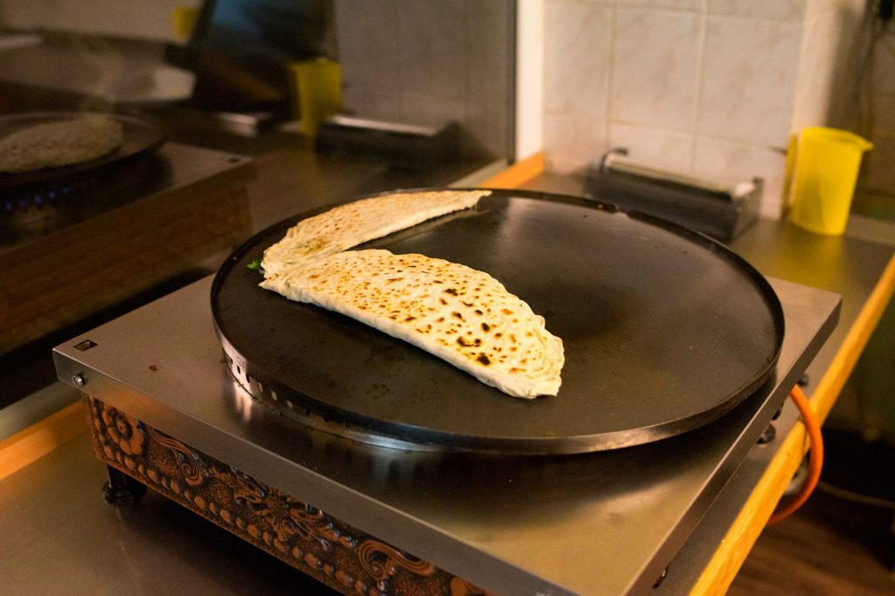
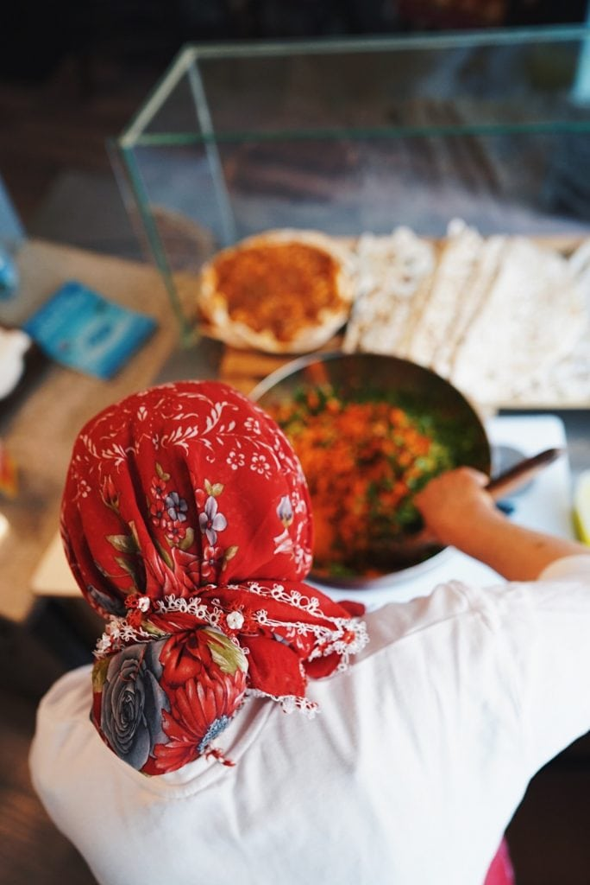
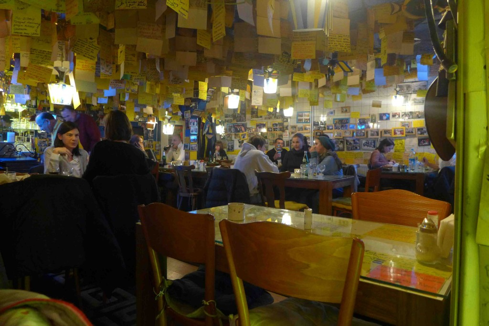
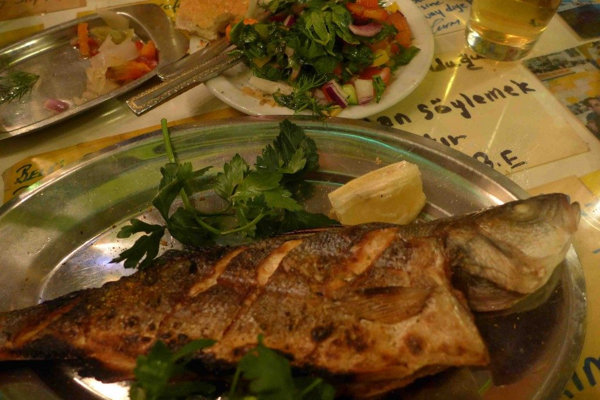
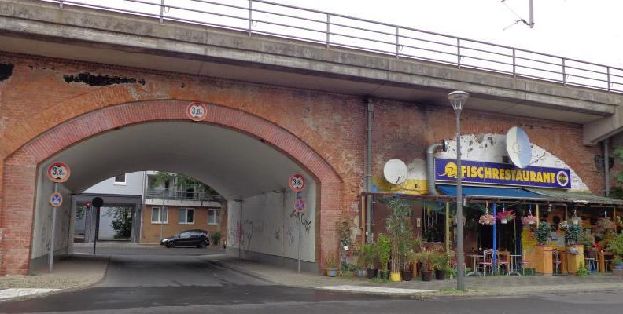
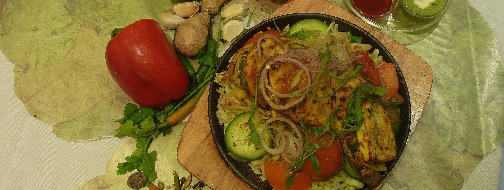
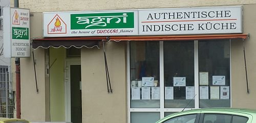
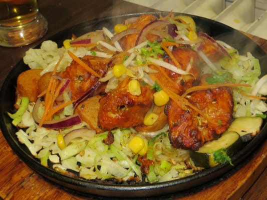

Food in Moabit
Food is very eclectic in Moabit, thanks to the big immigrant population. You can find almost all cuisines. For some unique experiences:
Gullu Lahmacun
Address: Perleberger Str. 56 10559 Berlin // Phone: +49 176 31562789
Hours: Mo-Fr 12-8PM Sat-Su 12-7PM
Güllü Lahmacun serves some of the freshest Turkish food in town. Once you have tried their Manti (little meat dumplings served with garlic yogurt and butter sauce) you’ll be coming back for more. A true Moabit hidden gem waiting to be discovered by you.

Gullu prepares everything from scretch. (photo credit: https://berlinfoodstories.com/2015/01/27/gullu-lahmacun-gozi-and-manti-deluxe/)

Gozleme with spinach and feta is a must-try! (photo credit: https://berlinfoodstories.com/2015/01/27/gullu-lahmacun-gozi-and-manti-deluxe/)

Lahmacun (Turkish pizza) is Gullu's speciality. (photo credit: https://berlinfoodstories.com/2015/01/27/gullu-lahmacun-gozi-and-manti-deluxe/)
Güllü Lahmacun is cash only. Price range: $10-20 per person. No reservation required.
Ergün's Fischbude (Balikci Ergun)
Address: Lueneburger Str. 382, 10557 Berlin // Phone: +49 30 3975737
Hours: Mo-Su: 3:30PM-12AM
This fish restaurant is so tiny that it fits under one arch of the S-Bahn rails and is so authentic at the same time that you might think you stepped into a small harbour restaurant in Istanbul. Here you can order fish, fish and fish. And drink raki!

Customers leave notes everywhere in this restaurant. Poems, love confessions, quotes, everything you may or may not imagine. (photo credit: https://berlinfoodstories.com/2013/02/07/kardas-mine-balikci-ergun-turkish-fish-frenzy/)

Fish comes fresh from Mediterranean Sea every day and served after grilled to perfection. (photo credit: https://berlinfoodstories.com/2013/02/07/kardas-mine-balikci-ergun-turkish-fish-frenzy/)

Restaurant has a unique location with trains passing right above your head. (photo credit: https://www.top10berlin.de/en/cat/eating-257/fish-restaurants-2755/fish-restaurant-balikci-ergun-3771)
Ergün's Fischbude is cash only. Price range: $30-40 per person. Reservation is recommended.
Restaurant Agni
Address: Kaiserin-Augusta-Allee 1 10553 Berlin // Phone: +49 176 49220550
Hours: Mo-Fr: 11AM-3PM, 6-10PM, Sat: 6-10PM, Su: Closed
This restaurant serves authentic Indian food from vegetarian or vegan to meat like lamb, beef and chicken. It is so small and cozy that you will feel like you are eating in your grandma's kitchen. The food is absolutely delicious.

Agni's signature dish is tandoori chicken served with fresh salad. (photo credit: https://www.restaurant-agni.de/)

Not the greatest curb appeal but don't let that change your mind! (photo credit:https://www.restaurant-agni.de/)

Sizzling, yummy tandoori! (photo credit:https://www.restaurant-agni.de/)
Agni is cash only. Price range: $15-25 per person. No reservation required.